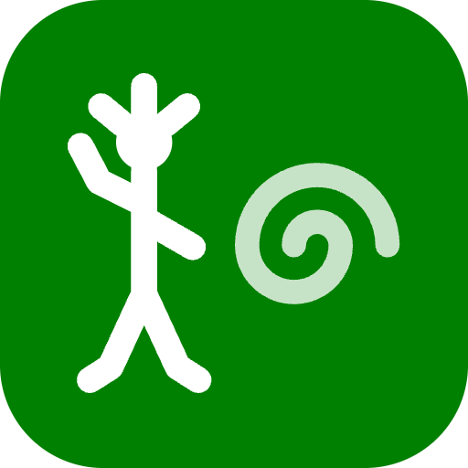
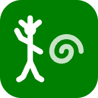

GlyphFree Agent Rig for your AI harnesses
Agent Rig. Find any one.



One Rigevery harness, one place- Free
- Open source
Agent names and logos belong to their owners. Glyph is not affiliated with them.
billing·acme-api·claude-code·laptop
herdr · glyph fleet review3 panes
$ glyph fleet review → three named panes
Claude Code
fix·acme-api·claude-code
● Read checkout/retry.ts
● Edit retry.ts +12 −4
● Bash npm test
● Bash git diff --stat
1 file, +12 −4
› Ready for review
● Bash git commit
● Bash gh pr create
› waiting on review
Codex
review·acme-api·codex
› review the retry diff
• backoff caps at 30 s
• no test for a 429
• add jitter to the delay
• log the final failure
• rest looks right
› re-review PR #214
• jitter added, good
• 429 test passes
› idle
AGY
docs·website·agy
› document the retry policy
• wrote docs/retry.md
• added an example
• linked it from the guide
• checked every link
• spelling clean
› add a changelog line
• CHANGELOG.md updated
• version noted
› idle